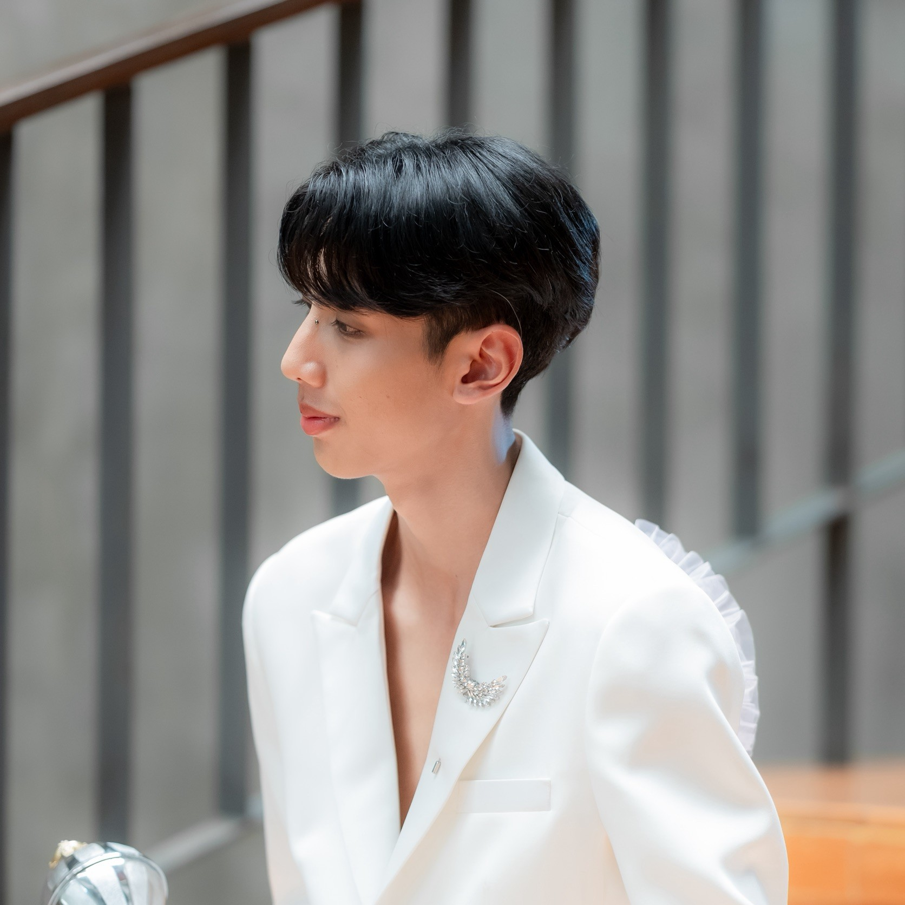

ชื่อ-นามสกุล: หะเบส แซ่ซึง
ชื่อเล่น: ม่อน
มหาวิทยาลัย: มหาวิทยาลัยธรรมศาสตร์
คณะ: คณะวิทยาศาสตร์และเทคโนโลยี
รหัสนักศึกษา: 6909650761
ยินดีต้อนรับสู่เว็บไซต์แนะนำตัวและผลงานของผม (A2 Responsive Portfolio)

ชื่อ-นามสกุล: หะเบส แซ่ซึง
ชื่อเล่น: ม่อน
มหาวิทยาลัย: มหาวิทยาลัยธรรมศาสตร์
คณะ: คณะวิทยาศาสตร์และเทคโนโลยี
รหัสนักศึกษา: 6909650761
เว็บไซต์นี้คือ Personal Portfolio Webpage ที่ออกแบบขึ้นเพื่อแนะนำตัวและนำเสนอข้อมูลส่วนตัว และช่องทางการติดต่ออย่างเป็นระเบียบ โดยเน้นดีไซน์ที่เข้าถึงง่าย สะอาดตา
ผมสร้างเว็บไซต์นี้ขึ้นมาโดยใช้เทคโนโลยีเว็บพื้นฐาน ดังนี้:
ปัญหาและความท้าทายที่พบ: การจัดวางเลย์เอาต์และการกำหนดภาพพื้นหลังให้แสดงผลได้พอดีและอ่านข้อความได้ชัดเจน ซึ่งแก้ไขโดยการปรับคุณสมบัติ CSS และใส่สีพื้นหลังแบบโปร่งแสงให้กับส่วนเนื้อหา
สิ่งที่เข้าใจมากขึ้นจากการทำ A1: ได้เข้าใจโครงสร้างพื้นฐานการทำงานร่วมกันระหว่าง HTML และ CSS รวมไปถึงการจัดกลุ่มองค์ประกอบบนหน้าเว็บให้เป็นระเบียบเรียบร้อย
สิ่งที่อยากปรับปรุงหรือเพิ่มในอนาคต: อยากเพิ่มลูกเล่นการตอบสนองบนมือถือ (Responsive Design) รวมถึงเพิ่มเอฟเฟกต์การโต้ตอบด้วย JavaScript เพราะจะช่วยให้เว็บไซต์มีความน่าสนใจและใช้งานได้สะดวกยิ่งขึ้น